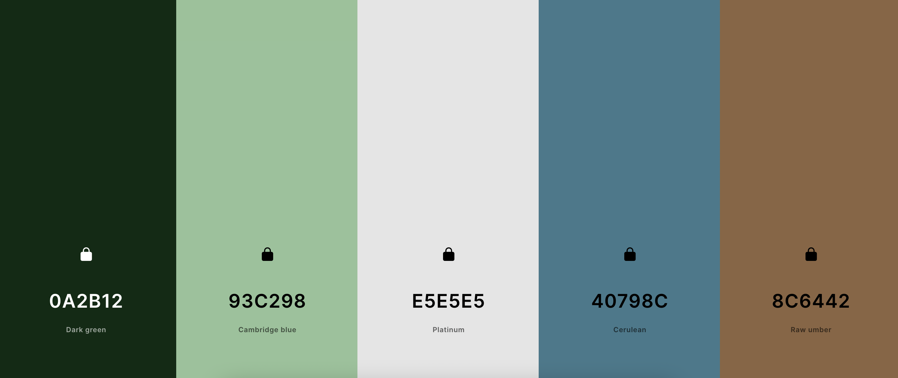
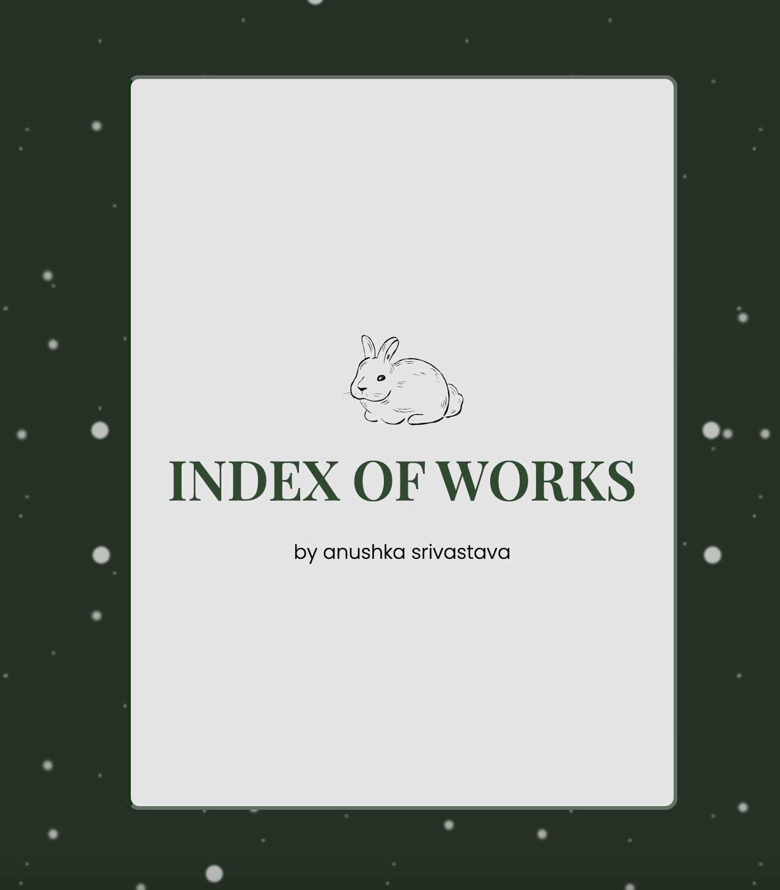
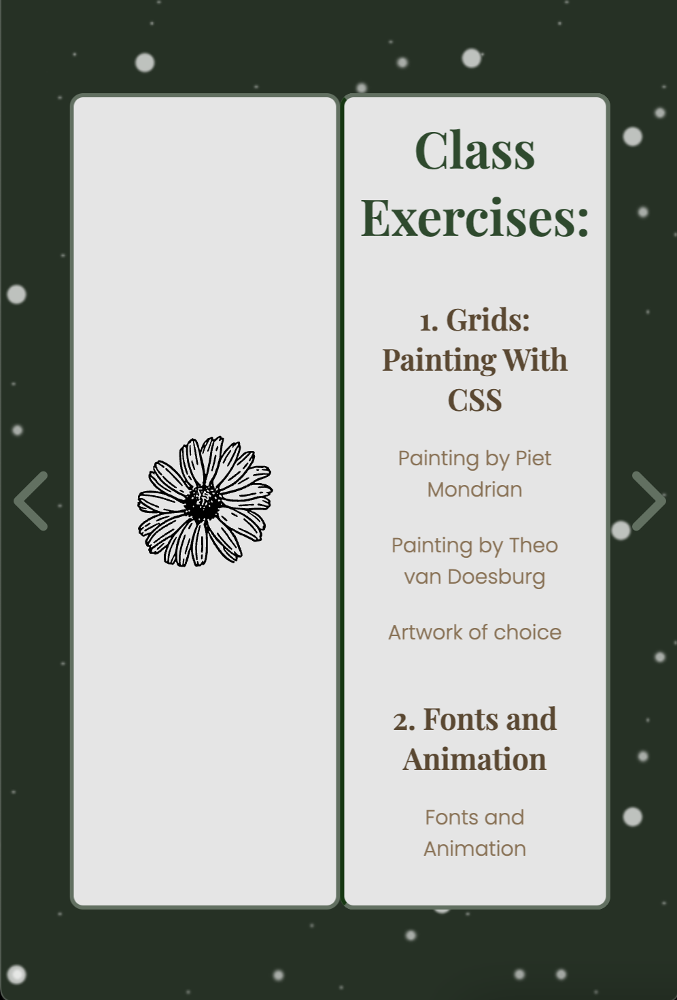

From the beginning of term since we were shown examples of other students' works, I knew I did
not want to make a
traditional portfolio website that looks like one that could be made on Adobe Portfolio or another similar
software. Those designs do look sleek and modern, but in my opinion they lack a personal touch. I'd much rather
have an unpolished website that looks handmade or amateurish than an impersonal one.
I also knew that I wanted to incorporate elements of traditional, or "old" media in my designs. I don't want to
be restricted by screens, and I am always looking to emulate analogue designs and elements in the digital world.
This meant that I wanted to incorporate some element of print media in my work—be it newspaper print, a
dinnercard, or a pamphlet.
This website or index is a representative of me, so I had to start by creating a moodboard of "me", my colors
and my style.
The photos in the moodboard were very carefully selected and curated. Those photos are the
essence behind the visual design, which is essentially a flipbook of sorts. I wanted the main aspect of it to be
a flippable menu/wine-list type thing that could be controlled by either click or arrow keys. I selected a dark
green background, and generated a color scheme based off of the moodboard and the dark green.

In short, I wanted the aesthetic to be like dining on a snowy winter night in a cabin in the forest looking at
the snow under fairy lights. The main book should ideally read as a wine list, which is why the design is
minimal and (attempted) elegant, i.e., only the links to the works are included and not the works themselves,
which would have otherwise made the website very crowded and overwhelming, which would go against what I was
trying to design. To keep up with the aesthetic, I found some royalty-free SVG icons of a rabbit and a daisy
that matched my theme, which I then included in my design.
Most of my HTML code was already written, as I kept updating it everytime we had an assignment to
hand in. All I had to do was arrange the links and images in different divs that corresponded to the different
pages that a user would flip through.
In terms of styling the webpage, I decided to go with a deep green background, and add a snow animation to the
background to make for a more engaging experience. Next, I designed the book with white pages, and separated and
positioned the pages using the z-index property. I managed to add the "flipping" animation using pure CSS, so I
didn't use the turn.js library. I had initially planned on using this library as it gives the user the feeling
of actually flipping through a paper magazine with turning/folding corners. But, I was able to achieve the
animation without the library, which I think worked out well for me in the long run. This is because the
animation I was able to achieve with the CSS code is a little stiff, which I interpret as flipping through a
thick paper like cardstock, which makes sense for a wine-list.

In terms of adding interactivity and page-flip animations, I used javascript to achieve that. I added some
buttons and added event listeners to those buttons for them to react to "click". I also added event listeners so
that users could also turn pagesusing the right and left arrow keys. Finally, the entirety of my page-flip
effect with the book changing positions dynamiclly when it was opened was implemented using javascript.
After I had all these basic features down, the last thing I did was make the website responsive. I made a
mobile/tablet-friendly version, where the width of the pages narrows down for screens smaller than 900px.
Initially, I wanted to arrange the pages of the book one below the other for smaller viewports where the viewers
would be able to vertically scroll through the pages, but because the content was layered on to both sides of a
single page much like a book, I found it extremely challenging to split the content onto two different pages and
then layer it all within a media-query. I tried referring to sources such as StackOverflow, even turned to
ChatGPT for assistance, but didn't get very far. So when I finally ran out of time, I decided to simply reduce
the width.

********************************************************************************************************************************